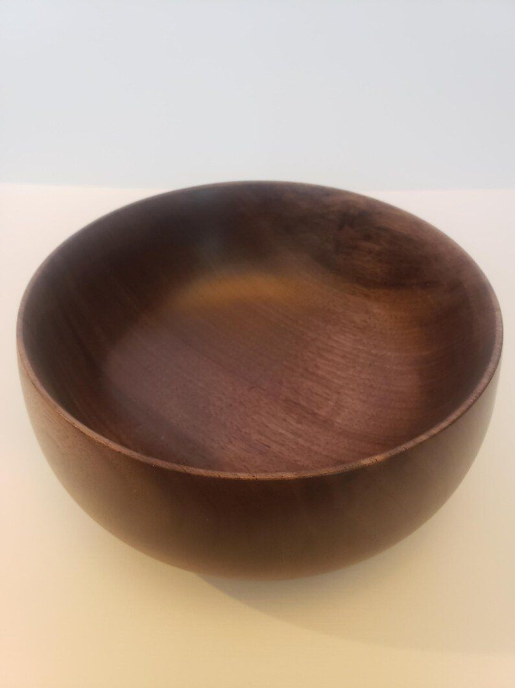
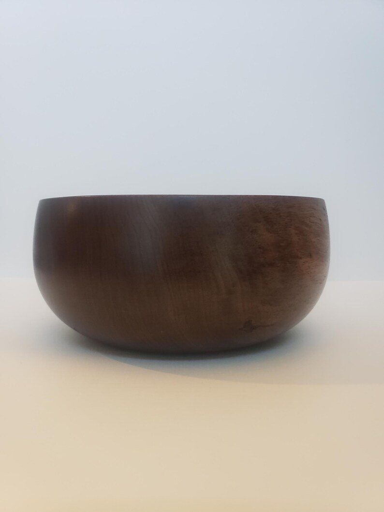
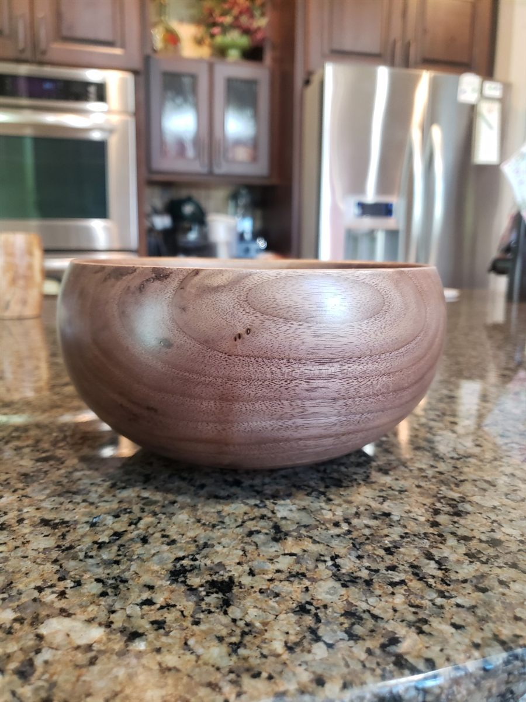
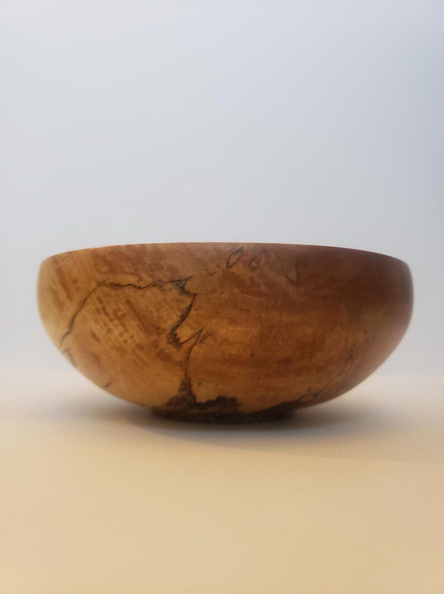
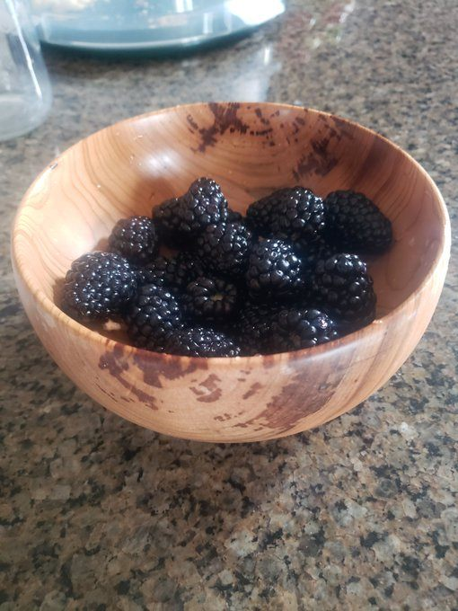
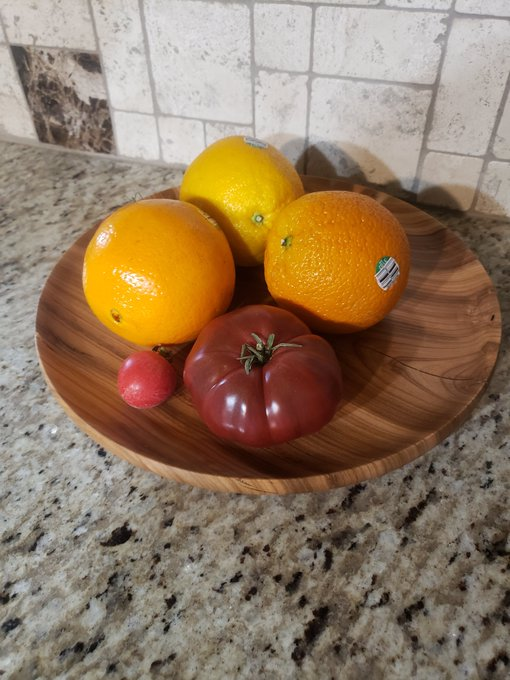
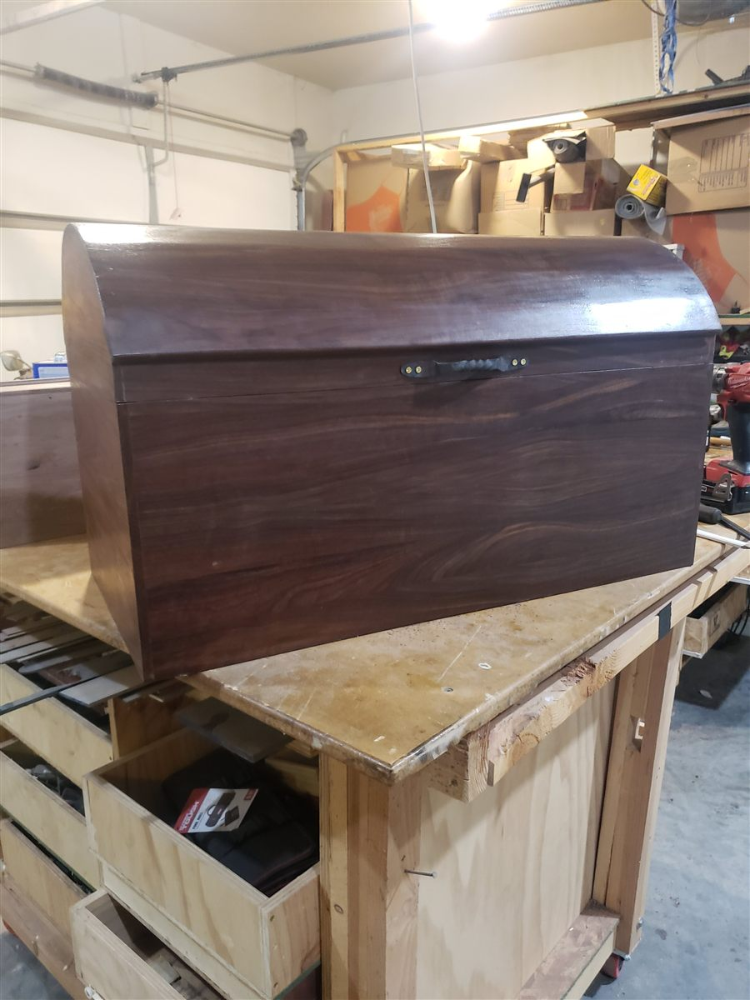
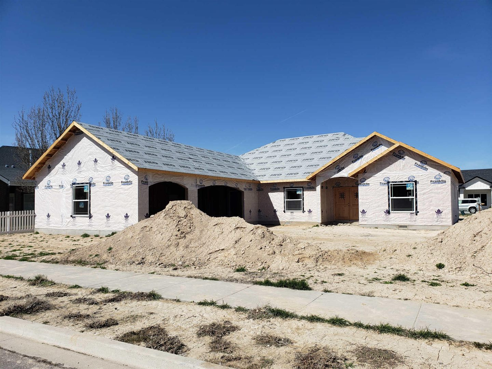

Walnut bowl
More views of this piece


Samuel Kerr / The person behind KERRCO
I’m Samuel Kerr, a software developer based in Twin Falls. I help small businesses get time back from repetitive work and frustrating software. I got my first software job at 15, spent ten years as a software engineer at Stanford Linear Accelerator Center, and later worked as a software development engineer at Fortinet.
I currently run a farm and previously operated a framing company in the Magic Valley. Woodworking is another part of my life, and I’ve run my own Linux servers and hosted services for decades. That experience helps me look at both the software and the day-to-day work it needs to support.
A look beyond the screenHands-on background / Farm & workshop
I run a farm alongside my software work. Fields, livestock, and a tractor rebuild are a few glimpses of the work that keeps me learning, fixing, and figuring things out.
Hands-on background / Woodwork
Making things from wood is another part of how I work: understanding the material, shaping a form, and refining the details.







Selected pieces from my woodworking portfolio. Select a photo for a larger view.
Construction / Past work
I previously worked as a framing contractor in the Magic Valley. These past projects show the firsthand experience I bring to understanding how people work.

Residential / Twin Falls
Framing a custom home in the Magic Valley.
I no longer operate the framing company. This portfolio is a record of my experience with planning, coordination, and hands-on building.
Talk about your business workflow